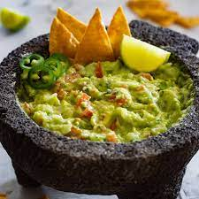

Guacamole

Description
Guacamole is an avocado-based dip or spread that originated in Mexico.
It's typically made with mashed avocado and lime juice, then seasoned with salt and cilantro.
Ingredients
- 3 avocados, mashed
- 1 lime, juiced
- 1 tsp salt
- 1 small diced onion
- 2 tomatoes, diced
- 1 tsp minced garlic
- 1 pinch groung cayenne pepper
Steps
- Mash avocados, lime juice, and salt togheter in a medium bowl; mix in tomatoes, onion, cilantro, and garlic. Stir in cayenne pepper.
- Serve immediately, or cover and refrigerate for 1 hour for improved flavor.